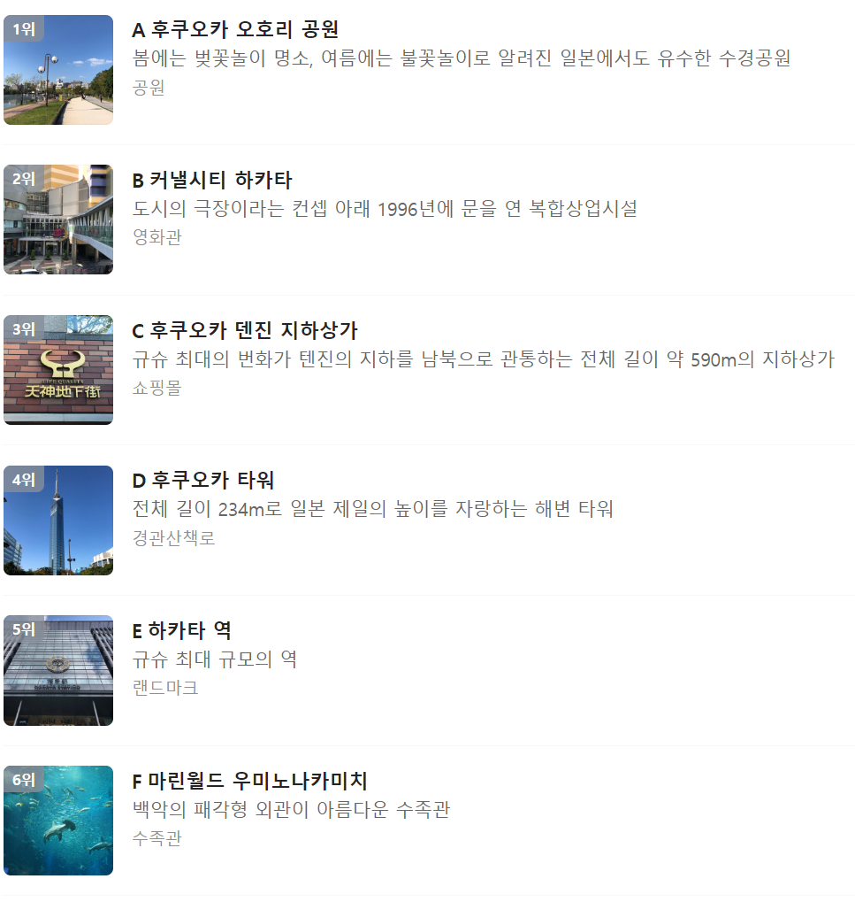

일본 여행에 관한 질문
일본 여행 소개
오키나와에서 홋카이도까지 남과 북의 뚜렷한 기후 차로 아름다운 자연과 다양한 문화를 가지고 있다.
비자: 일본에 관광 목적으로 방문하는 경우, 무비자로 최대 90일간 머무를 수 있다.
안전정보: 후쿠시마 원전 반경 30km 이내 및 일본 정부 지정 피난지시구역으로 지정되어 있다.
시차: 시차는 없다.
통화: 일본엔 JPY
환전: 환전은 은행, 우체국, 호텔, 공항에서 할 수 있다. 현지 도착 후 바로 사용할 수 있도록 ￥10,000권과 ￥1,000권으로 나누어서 미리 환전해 두는 것이 좋다.
언어: 일본어 일반 가게에서의 영어 사용은 원활하지 않을 수 있다. 단어를 말해도 영어를 일본식으로 바꾸어 사용하므로 소통이 어려울 수도 있다.
날씨: 남북으로 긴 일본열도는 연평균 기온의 차이가 홋카이도 6.3℃, 오키나와 22.3℃로 그 차이가 16℃에 이른다. 해양성의 영향으로 겨울에 따뜻하고 여름에 덥고 습하다.
물가: 비쌈 대체로 물가가 비싼 편이다.
전압: 100V
도쿄 여행지
오사카 여행지
후쿠오카여행지

오키나와 여행지